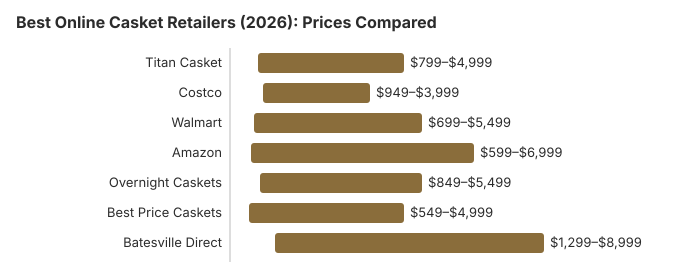

Best Online Casket Retailers (2026): Prices Compared
Buying a casket online can save your family $1,000 to $3,000 compared to funeral home prices -- and it is completely legal and protected by federal law. Yet many families do not realize they have this option, or they feel uncomfortable shopping online during a difficult time. This guide compares the seven best online casket retailers in 2026, examining their prices, product selection, shipping speed, return policies, and customer experience. Our goal is to help you make a confident, informed purchase that honors your loved one while protecting your family's finances.
Why Buy a Casket Online?
Funeral homes mark up caskets by 200 to 400 percent above their wholesale cost. A casket that the funeral home purchased for $500 might be sold to you for $2,000 or more. Online retailers operate on much thinner margins, passing the savings directly to consumers. Here is why buying online makes sense:
- Massive cost savings: Most families save 30 to 70 percent, or $1,000 to $3,000, by purchasing online instead of from a funeral home.
- Wider selection: Online retailers typically stock 50 to 200+ models, compared to the 10 to 30 on display in a funeral home showroom.
- No pressure environment: You can browse, compare, and decide at your own pace without a salesperson present.
- Transparent pricing: Every price is clearly listed online. No hidden fees, no package bundling, no upselling in person.
- Fast delivery: Most online retailers deliver directly to the funeral home within 24 to 48 hours.
- Federal protection: The FTC Funeral Rule requires funeral homes to accept third-party caskets with no extra fees.
For a complete guide to casket types, materials, and pricing, see our Casket Buying Guide.
Online Casket Retailer Comparison Table
| Retailer | Price Range | Selection | Shipping | Returns | Best For |
|---|---|---|---|---|---|
| Titan Casket | $799 – $4,999 | 100+ models | Free; 1–3 days | Full refund if unused | Best overall value |
| Costco | $949 – $3,999 | 15–20 models | Free; 2–5 days | Costco guarantee | Trusted brand + returns |
| Walmart | $699 – $5,499 | 60+ models | Free on most; 2–5 days | Varies by seller | Budget shoppers |
| Amazon | $599 – $6,999 | 200+ models | Free Prime; 1–5 days | 30-day returns | Widest selection |
| Overnight Caskets | $849 – $5,499 | 50+ models | Free; overnight available | Full refund if unused | Fastest delivery |
| Best Price Caskets | $549 – $4,999 | 40+ models | Free; 1–3 days | Exchange or refund | Lowest starting prices |
| Batesville Direct | $1,299 – $8,999 | 30+ models | Free; 2–4 days | Limited | Premium/brand-name |

Titan Casket -- Best Overall Value
Titan Casket has rapidly become the leading online casket retailer by offering funeral-home-quality caskets at dramatically lower prices. Founded with the mission of bringing transparency and fairness to casket pricing, Titan sells directly to consumers and delivers to any funeral home in the continental United States. They also offer a casket rental program for families choosing cremation.
What They Offer
- Price range: $799 to $4,999 for purchase; $799 for rental
- Selection: 100+ models including steel, hardwood, softwood, veneer, and eco-friendly options
- Materials: 20-gauge steel, 18-gauge steel, stainless steel, solid oak, cherry, mahogany, poplar, pine, bamboo, wicker
- Shipping: Free shipping on all orders; next-day delivery available in most areas; ships via professional freight carrier
- Returns: Full refund on unused caskets; dedicated customer service team
- Extras: Personalization options, urn collection, casket rental program, memorial products
Pros
- Excellent prices -- often listed below funeral-home casket prices; compare the current GPL, because the NFDA 2023 study (latest available) did not survey online retailers and its median metal casket was $2,500
- Largest selection of any dedicated online casket retailer
- Fast, reliable delivery with real-time tracking
- Transparent pricing -- no hidden fees
- Casket rental option for cremation families ($799)
- Responsive customer service via phone, email, and chat
- Free white-glove delivery to the funeral home
Cons
- Cannot physically see or touch the casket before purchase
- Premium hardwood options are still significant purchases ($2,500+)
- Delivery times may be longer in rural areas
Costco -- Best Return Policy
Costco entered the casket market in 2004 and has since become a trusted option for families seeking quality caskets at warehouse-club prices. While their selection is smaller than dedicated casket retailers, Costco's legendary satisfaction guarantee and brand trust make them a compelling choice.
What They Offer
- Price range: $949 to $3,999
- Selection: 15 to 20 models, curated for quality and value
- Materials: 20-gauge steel, 18-gauge steel, bronze, solid hardwoods
- Shipping: Free shipping; delivery within 2 to 5 business days via freight carrier
- Returns: Costco's standard satisfaction guarantee applies -- one of the most generous return policies in retail
- Membership: Costco membership required ($65/year for Gold Star, $130/year for Executive)
Pros
- Costco satisfaction guarantee -- unmatched return protection
- Trusted, well-known brand
- Competitive pricing with consistent quality
- Free shipping on all caskets
- Each casket includes detailed product descriptions and specifications
Cons
- Limited selection -- only 15 to 20 models
- Requires Costco membership
- No personalization options
- Delivery may take 2 to 5 days -- not ideal for urgent needs
- No casket rental option
- No phone-based casket consultation available
Walmart -- Best for Budget Shoppers
Walmart offers caskets through its online marketplace, with products from multiple third-party sellers as well as some direct offerings. This creates a wide price range and extensive selection, though quality and service vary by seller. Walmart's marketplace model means you are often buying from specialized casket distributors who sell through the Walmart platform.
What They Offer
- Price range: $699 to $5,499
- Selection: 60+ models from multiple sellers
- Materials: Steel (various gauges), solid wood, veneer, eco-friendly options
- Shipping: Free shipping on most orders; 2 to 5 business days typical
- Returns: Varies by seller -- check individual seller policies before purchasing
Pros
- Some of the lowest starting prices available online ($699)
- Wide selection across multiple price points
- No membership required
- Free shipping on most items
- Familiar, trusted shopping platform
Cons
- Marketplace model means variable quality and service depending on seller
- Return policies vary -- some sellers have strict no-return policies
- Customer service for casket-specific questions may be limited
- Product descriptions may lack detail compared to dedicated casket retailers
- Some listings may have inaccurate or misleading photos
Amazon -- Widest Selection
Amazon offers the largest selection of caskets of any online marketplace, with 200+ options ranging from basic steel models to premium hardwoods and eco-friendly alternatives. Amazon Prime members benefit from fast, free shipping on eligible models. Like Walmart, many caskets are sold by third-party sellers through Amazon's marketplace.
What They Offer
- Price range: $599 to $6,999
- Selection: 200+ models -- the largest selection of any online retailer
- Materials: Every major material type including steel, stainless steel, bronze, copper, solid hardwoods, softwoods, biodegradable, and veneer
- Shipping: Free with Prime on eligible items; 1 to 5 business days
- Returns: Amazon's standard 30-day return policy applies to most caskets
Pros
- Largest selection available -- 200+ models
- Amazon's A-to-Z guarantee provides buyer protection
- Customer reviews help evaluate products
- Prime shipping available for fast delivery
- Easy comparison shopping across multiple sellers
- 30-day return policy on most items
Cons
- Third-party seller quality varies significantly
- Some listings have misleading photos or descriptions
- Casket-specific customer support is limited
- Higher-priced models may not represent better value compared to Titan Casket
- Overwhelming number of choices can make decision-making harder
Overnight Caskets -- Fastest Delivery
Overnight Caskets specializes in rapid delivery, making them the go-to choice when timing is critical. As their name suggests, they offer overnight delivery in most areas of the continental United States. They are a dedicated casket retailer with a knowledgeable customer service team that understands the urgency and sensitivity of casket purchasing.
What They Offer
- Price range: $849 to $5,499
- Selection: 50+ models covering all major materials and styles
- Materials: Steel, solid hardwoods, softwoods, veneer, and eco-friendly options
- Shipping: Free standard shipping; overnight and rush delivery available for most areas
- Returns: Full refund on unused caskets returned within 30 days
Pros
- Fastest delivery in the industry -- overnight shipping available
- Dedicated casket expertise -- staff understands the product and the situation
- Reasonable prices competitive with other specialized retailers
- Direct-to-funeral-home delivery
- Phone support with knowledgeable representatives
Cons
- Selection is smaller than Titan Casket or Amazon
- Overnight shipping may cost extra in some areas
- Prices slightly higher than the absolute lowest-cost options
Best Price Caskets -- Lowest Starting Prices
Best Price Caskets lives up to their name by offering some of the lowest casket prices available online. They focus on delivering value-oriented caskets with fast shipping, making them a strong choice for families on a tight budget who still want a dignified, quality product.
What They Offer
- Price range: $549 to $4,999
- Selection: 40+ models focused on value
- Materials: Steel, solid wood, veneer, and basic eco-friendly options
- Shipping: Free shipping; 1 to 3 business days delivery
- Returns: Exchange or refund on unused caskets
Pros
- Lowest starting prices -- caskets from $549
- Free shipping included
- Fast delivery -- most orders arrive within 1 to 3 days
- Straightforward, no-frills shopping experience
Cons
- Smaller selection than Titan Casket or Amazon
- Website and product photos less polished than larger competitors
- Customer service less robust than Titan Casket or Overnight Caskets
- Limited premium and luxury options
Batesville Direct -- Premium Brand Name
Batesville is the largest casket manufacturer in the United States and has been in operation since 1884. While they traditionally sold exclusively through funeral homes, Batesville now offers select products through direct and online channels. If you want a recognized brand name and are willing to pay a premium for it, Batesville is the industry standard.
What They Offer
- Price range: $1,299 to $8,999
- Selection: 30+ models with a focus on quality craftsmanship
- Materials: Premium steel, copper, bronze, solid hardwoods including cherry, mahogany, oak, and walnut
- Shipping: Free professional delivery; 2 to 4 business days
- Returns: Limited -- more restrictive than other online retailers
Pros
- The most recognized casket brand in America -- trusted by funeral professionals for over 140 years
- Superior craftsmanship and quality control
- Wide range of premium materials and finishes
- Professional delivery network
- Comprehensive warranty on materials and workmanship
Cons
- Significantly higher prices than other online retailers
- Smaller selection of budget-friendly options
- More restrictive return policy
- Direct-to-consumer options may be limited in some areas
- You are paying a premium for the brand name -- similar-quality products are available for less from Titan Casket
How to Buy a Casket Online: Step-by-Step
Purchasing a casket online is simpler than most people expect. Follow these steps for a smooth experience:
- Determine your budget and needs. Decide on a price range, preferred material (metal, wood, eco-friendly), and any special requirements (size, color, personalization). Our Casket Buying Guide can help.
- Research retailers. Compare prices, selection, shipping speed, and return policies using the comparison table above. Get the funeral home's address and contact information ready.
- Inform the funeral home. Let the funeral home know you will be providing your own casket. Under the FTC Funeral Rule, they must accept it. Ask them for any delivery instructions or timing preferences.
- Place your order. Most online retailers allow you to ship directly to the funeral home. Provide the funeral home's name, address, and phone number during checkout.
- Confirm delivery. Track your shipment and confirm with the funeral home when the casket arrives. Inspect it upon delivery and document any damage with photos.
- Keep your receipt. Save your purchase confirmation and receipt. If the funeral home is uncooperative about accepting your casket (which would violate federal law), having documentation is important.
Your FTC Rights: The Funeral Rule Protects You
The Federal Trade Commission's Funeral Rule provides essential protections for families who buy caskets from third-party sources:
- Funeral homes must accept outside caskets. They cannot refuse to use a casket you purchased from an online retailer, warehouse club, or any other source.
- No handling fees allowed. Funeral homes cannot charge extra for using a casket you did not buy from them.
- Itemized pricing required. Funeral homes must provide a General Price List showing the cost of each service and product separately, so you can see exactly what you are paying for.
- Alternative containers for cremation. If you are choosing cremation, the funeral home must offer an inexpensive alternative container -- they cannot require you to buy a casket.
If a funeral home violates any of these protections, you can file a complaint with the FTC at ftc.gov or contact your state attorney general.
Frequently Asked Questions
Is it legal to buy a casket online instead of from a funeral home?
Yes. Under the Federal Trade Commission's Funeral Rule, funeral homes must accept caskets purchased from any third-party source, including online retailers, warehouse clubs, and independent sellers. The funeral home cannot charge a handling fee or refuse to use a casket you purchased elsewhere. This federal protection gives families the freedom to shop for the best value.
How much can I save by buying a casket online?
Most families save 30 to 70 percent by purchasing a casket online versus buying from a funeral home. A casket that costs $2,500 at a funeral home might cost $800 to $1,200 from an online retailer. Funeral homes typically mark up caskets 200 to 400 percent above wholesale cost, while online retailers operate on much thinner margins. Savings vary by provider.
How fast can an online casket be delivered?
Most major online casket retailers offer delivery within 24 to 48 hours for standard models in stock. Titan Casket offers next-day delivery on many products. Costco, Walmart, and Amazon typically deliver within 1 to 5 business days depending on your location and the specific model. Overnight and rush delivery options are available from specialized retailers for an additional fee.
What happens if the casket arrives damaged?
Reputable online casket retailers have return and replacement policies for damaged products. Titan Casket and Overnight Caskets will ship a replacement immediately if a casket arrives damaged. Costco has an exceptionally generous return policy. Amazon allows returns on most caskets within 30 days. Always inspect the casket upon delivery and document any damage with photos before accepting the shipment.
Can the funeral home refuse to use a casket I bought online?
No. Under the FTC Funeral Rule, funeral homes are legally required to accept caskets from third-party sources without charging any extra fees or penalties. If a funeral home refuses to use your online-purchased casket or charges a handling fee, they are violating federal law. You can file a complaint with the FTC at ftc.gov or contact your state's attorney general.
Do online caskets come with a warranty?
Warranty coverage varies by retailer. Titan Casket offers a comprehensive warranty on materials and craftsmanship. Costco caskets come with their standard satisfaction guarantee. Most metal caskets from reputable online retailers include a manufacturer warranty against defects. However, no warranty covers normal wear from burial. Always check the specific warranty terms before purchasing.
Resources That May Help
- Titan CasketLeading online casket retailer with 100+ models and free delivery
- Funeral Consumers AllianceIndependent consumer advocacy for funeral rights and fair pricing
- Casket Buying GuideComplete guide to casket types, materials, prices, and consumer rights
- FTC Funeral Rule GuideUnderstand your federal protections when purchasing a casket
Get Our Free Funeral Cost Guide
Sign up for occasional email updates on casket prices, online retailers and your right to buy a casket elsewhere.
No spam. Unsubscribe anytime. We respect your privacy.
Disclaimer: Information only, not professional advice. Full disclaimer.